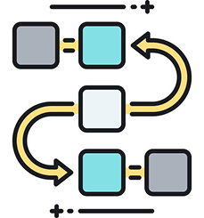
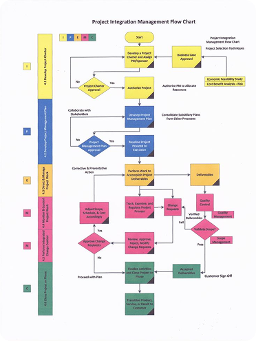

Estuda Share
Compartilhe seu conhecimento.
Faça parte da nossa comunidade.
Como funciona?

Organize seu conhecimento em um mapa mental, com links e arquivos de apoio, imagens, vídeos e instruções. Compartilhe com a comunidade. Você escolhe acesso livre ou por taxa.
Explorar

Sistema Cardiovascular
"Oi, pessoal! Subi meu mapa de Sistema Cardiovascular. Ele é bem visual, com o coração no centro e cores diferentes para artérias e veias. Usei desenhos e poucas palavras porque foco em bater o olho e lembrar do todo. É ótimo para aquela revisão rápida cinco minutos antes da prova!"
Por: @anab.moraes | Medicina

Estruturas de Dados
"Galera, compartilhei um mapa sobre Estruturas de Dados. Ele é bem estruturado, de cima para baixo. Foquei em mostrar as conexões lógicas: por que uma 'Pilha' é diferente de uma 'Fila' e onde cada uma se aplica. Se você tem dificuldade em entender a hierarquia dos conceitos, esse aqui vai te ajudar muito."
Por: @jujucria | Ciências da Computação

Processo Penal
"Acabei de postar o passo a passo do Processo Penal. Não é um resumo comum, é um guia de 'caminho'. Se acontecer X, o processo vai para a direita; se Y, vai para a esquerda. Usei setas para você não se perder na sequência dos fatos. Ideal para quem estuda lógica ou cronogramas!"
Por: @lari.cria | Direito/Concurso
Fórum
Confira o que a comunidade está falando.
Mariana S. | Medicina
"O EstudaShare salvou meu semestre! Encontrei mapas mentais incríveis sobre anatomia que me ajudaram a visualizar o que eu não entendia nos livros. Já comecei a subir meus resumos de patologia também!"
Beatriz F. | Concurseira
"O que eu mais gosto é a colaboração. Às vezes posto um mapa mental e recebo sugestões de melhoria de outros alunos. É como ter um grupo de estudos gigante disponível 24 horas por dia."
Lucas R. | Ciências da Computação
"Finalmente um lugar centralizado para trocar materiais de qualidade. A interface é limpa e a lógica de compartilhamento por pastas facilita muito na hora de revisar algoritmos complexos antes das provas."